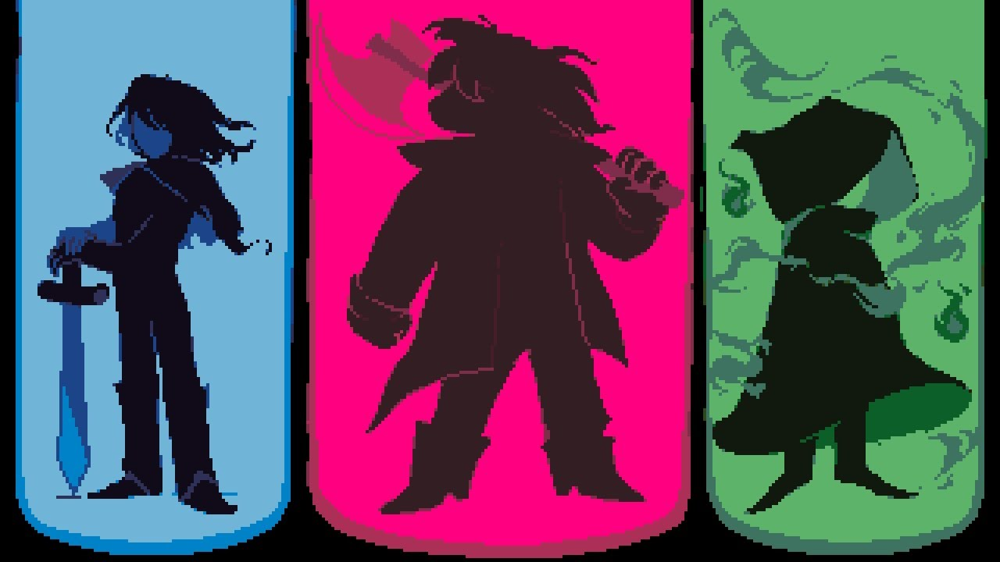
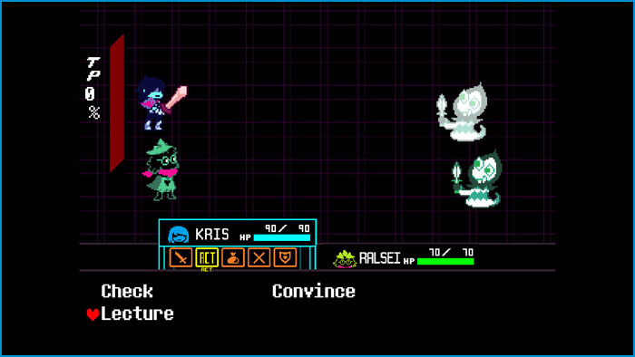
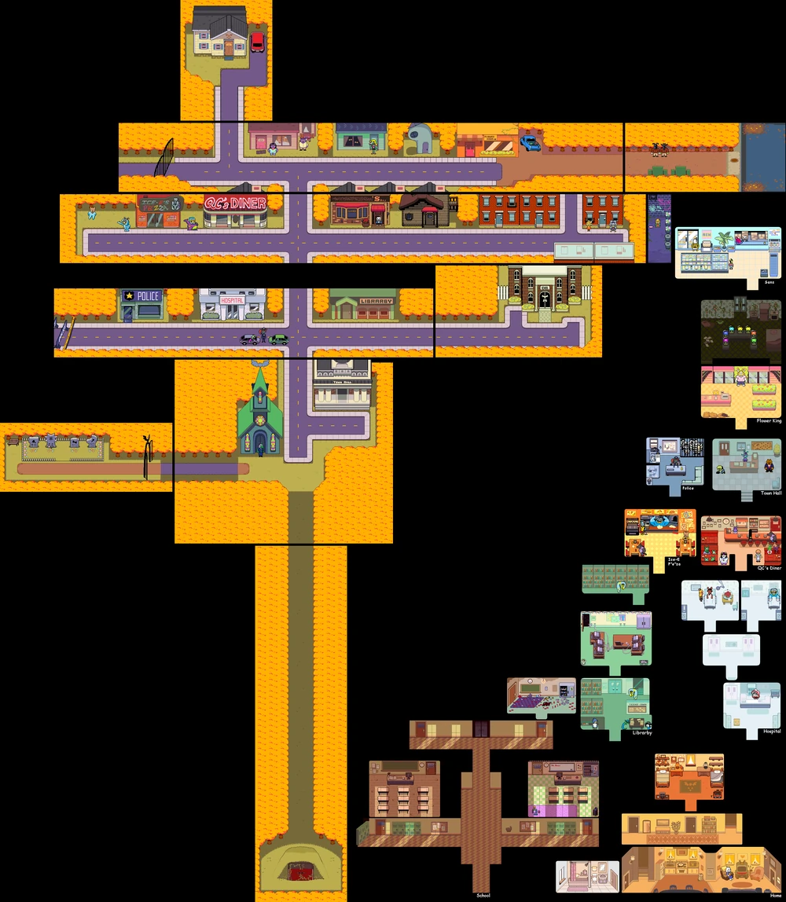
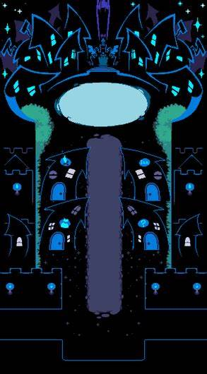

Deltarune, uma releitura de Undertale
Deltarune é um jogo indie (produção independente, sem envolvimento de grandes empresas em sua criação) desenvolvido por Toby Fox, lançado em 2018. O jogo se passa em uma espécie de universo paralelo ao de Undertale, outro jogo do mesmo desenvolvedor, que fez um enorme sucesso mundial desde o seu lançamento em 2015.
História
Capitulo 1:
Você joga como Kris, um estudante quieto. Um dia, Kris e sua colega Susie são mandados para pegar giz na sala de material e acabam caindo em um mundo desconhecido chamado Dark World. Lá, eles conhecem Ralsei, um príncipe gentil, que diz que os três são heróis destinados a restaurar o equilíbrio entre a Luz e a Escuridão. Juntos, eles enfrentam inimigos, fazem amizades (como com a rebelde Lancer) e fecham uma fonte de escuridão que ameaçava os mundos.
Capitulo 2:
Kris, Susie e Ralsei retornam ao Dark World, agora localizado dentro do computador do laboratório da escola. Eles enfrentam a rainha do local, a Queen, que quer usar uma criança chamada Noelle para seus próprios fins. Durante essa aventura, são introduzidos novos personagens e ameaças, como o estranho e manipulador Spamton. Ao final, eles fecham outra fonte de escuridão, mas Kris volta a agir de forma misteriosa, arrancando sua alma (representada pelo coração vermelho) mais uma vez.
*Os próximos capitulos ainda estão em processo de desenvolvimento, os capitulos do 3 ao 5 estão previstos para serem lançados dia 5 de junho de 2025*
Combate
O combate em Deltarune, é como uma mistura elementos de RPG clássico com mecânicas inovadoras, bem parecido com o sistema de Undertale, porém mais refinado e com mecânicas novas interessantes, incluindo interação com os outros membros da equipe além de Kris. Durante as batalhas, o jogador pode escolher entre lutar ou resolver conflitos de forma pacífica, oferecendo opções como conversar, poupar ou usar habilidades especiais. Essa abordagem incentiva estratégias diferentes e dá profundidade moral às decisões do jogador. Além disso, os inimigos atacam em turnos com minijogos de esquiva em tempo real, exigindo reflexos rápidos. O sistema torna cada confronto único e dinâmico, equilibrando ação, humor e narrativa de forma criativa.
Mundo
Hometown
Hometown é a cidade pacata onde vivem Kris, Susie e outros personagens do mundo "real" de Deltarune. Com uma atmosfera tranquila e acolhedora, ela contrasta fortemente com os cenários caóticos do Mundo das Trevas. A cidade conta com locais típicos de uma pequena comunidade americana, como uma escola, hospital, mercado, igreja e diversos estabelecimentos residenciais e comerciais. Apesar de parecer comum à primeira vista, Hometown guarda muitos segredos e sutilezas. Seus moradores têm comportamentos estranhos ou curiosos, e há indícios de que eventos sobrenaturais possam estar ligados a esse mundo. Ao explorar a cidade, o jogador pode perceber pequenas pistas sobre o passado dos personagens, conexões com Undertale, e elementos misteriosos que contribuem para uma atmosfera de constante dúvida sobre o que é real ou não.
Dark Wolrd
O Mundo das Trevas, ou Dark World, é um universo paralelo que coexiste com Hometown, acessado por meio de objetos aparentemente comuns (como armários ou fontes de energia mágica). Nesse mundo, as regras da realidade são distorcidas: criaturas chamadas Darkners ganham vida, locais comuns se transformam em castelos ou cidades digitais, e batalhas em turnos se tornam parte da rotina. Cada Dark World parece surgir a partir de um "objeto-fonte" (como um computador ou uma fonte de energia) e possui sua própria estética, habitantes e ameaças. No Capítulo 1, os heróis enfrentam perigos em um castelo sombrio. No Capítulo 2, exploram uma metrópole digital caótica. Apesar de serem mundos diferentes, todos compartilham a ideia de equilíbrio entre a Luz e a Escuridão, algo fundamental para evitar o colapso da realidade. Além da aventura, o Dark World serve como metáfora para temas mais profundos do jogo, como escapismo, amadurecimento e conflito interno. A cada capítulo, novas camadas são reveladas, dando ao jogador a sensação de que há muito mais por trás dessa dualidade entre o mundo comum e o fantasioso.